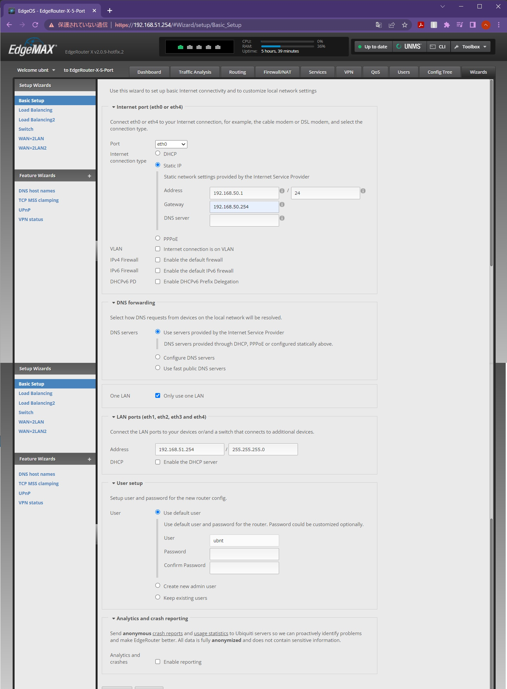

Router #
検討 #
用途 #
- On-Premise Kubernetes ClusterでServiceのtype:Loadbalancerを使う
条件 #
BGP #
- On-Premise Kubernetes ClusterでServiceのtype:Loadbalancerを使いたいので
省スペース #
- 設置スペースが狭いので
静音 #
- 自宅に設置するので
安価 #
- 予算が少ないので
省電力 #
- 自宅に設置するので
候補 #
Ubiquiti Networks EdgeRouter ER-X #
- 日本語情報が多い
- 値上がり傾向
mikrotik hEX RB750Gr3 #
- 日本語情報が少ない
- ER-Xより安価
結果 #
Ubiquiti Networks EdgeRouter ER-X #
こちらの方が情報を集めやすそうだった。
RB750Gr3は入手するまでに日数が掛かりそうだった。
- Mediatek MT7621A 880MHz MIPS1004Kc 2Core
- DDR3 256MB
- 256MB ROM
- EdgeOS
- 110×75×22 mm
- 静音
- 16,400円
購入について
私は上記の価格でAmazonより購入しました。
その時は eurodk.comが、日本へのShippingを停止していたからです。
今は、 getic.comで、購入確定前まで進めます。
日本へのShippingに対応してくれるかも知れません。
設定 #
Switch #
Routerとして機能させるまでは、GUIのWizardsが便利でした。 
「Only use one LAN」にチェックをすると、LAN側にSwitchデバイスが作成されて、ハードウェアが処理します。
BGP #
BGPの設定はCUIが便利です。
ssh ubnt@192.168.51.254
configure
set protocols bgp 65001 maximum-paths ebgp 3
set protocols bgp 65001 neighbor 192.168.51.2 peer-group k8scluster01
set protocols bgp 65001 neighbor 192.168.51.3 peer-group k8scluster01
set protocols bgp 65001 neighbor 192.168.51.4 peer-group k8scluster01
set protocols bgp 65001 parameters router-id 192.168.51.254
set protocols bgp 65001 peer-group k8scluster01 default-originate
set protocols bgp 65001 peer-group k8scluster01 remote-as 65002
commit
save
exit